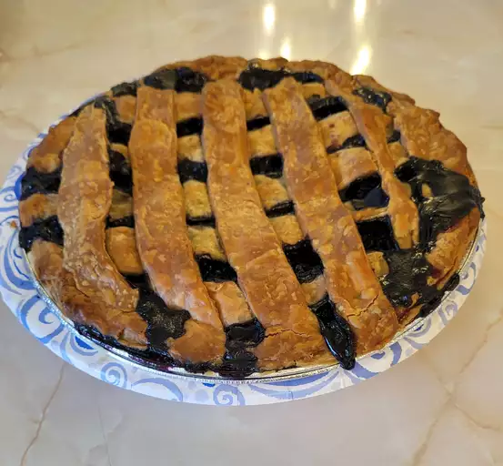

Blueberry Pie Recipe

Ingredients
- 3/4 cup of white sugar
- 3 tablespoons of cornstarch
- 1/2 teaspoon ground cinnamon
- 1/4 teaspoon salt
- 4 cups of fresh blueberries
- 1 (14.1) ounce of pie crust
- 1 tablespoon of butter
Directions
- Set an oven rack to the lowest position and preheat the oven to 375 degrees F (190 degrees C)
- Mix sugar, cornstarch, cinnamon, and salt together in a bowl; sprinkle over blueberries.
- Line a pie dish with one pie crust. Pour berry mixture into the crust and dot with butter. Cut remaining pastry into 1/2- to 3/4-inch-wide strips. Use the strips to weave a lattice top. Crimp and flute the edges.
- Bake pie on the lowest oven rack until filling is bubbling and crust is golden brown, about 50 minutes.